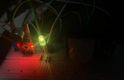
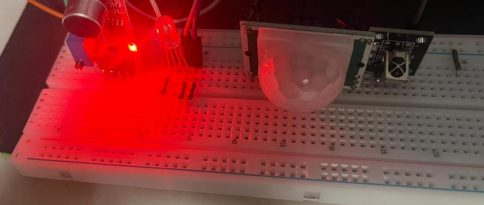
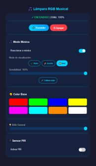
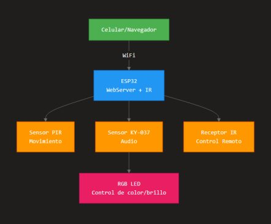

AURA · Lámpara RGB inteligente
Una lámpara con ESP32 que se enciende por presencia, reacciona a la música captada por micrófono y se controla por panel web, control IR y una app móvil; una versión posterior muestra en pantalla lo que suena en Spotify.
- Estado
- Funcional
- Periodo
- nov 2025 – jun 2026
- Versión
- Ev4 (evaluada) · SpotifyAura V2 (más reciente)
- Categorías
- IoT · ESP32 · APIs
Objetivo y contexto
Encender la lámpara solo con presencia para ahorrar energía, reaccionar a la música en tiempo real y permitir control inalámbrico desde celular o control remoto, sin depender de la nube.
Problema. Las luces RGB domésticas se encienden a mano, no responden al entorno y suelen depender de un solo método de control.
Arquitectura del sistema
El ESP32 ejecuta en un solo lazo el servidor web, la lectura del receptor IR, el análisis del micrófono y la lógica del PIR. Cada tecnología actúa como una capa independiente que modifica el mismo estado de la lámpara (encendido, color, brillo y modo). En la versión SpotifyAura V2 se añaden un cliente HTTPS que consulta la canción en curso y una pantalla OLED.
Diagrama de bloques
Pines y buses tomados del código fuente.
Hardware y componentes
| Componente | Función | Conexión | Evidencia |
|---|---|---|---|
| ESP32 DevKit | Controlador, Wi-Fi | — | Verificado en código |
| LED RGB de cátodo común | Salida de luz | R GPIO14 · G GPIO12 · B GPIO13 | Verificado en código |
| Micrófono KY-037 | Nivel de sonido | Analógico GPIO34 | Verificado en código |
| Sensor PIR HC-SR501 | Presencia | Digital GPIO27 | Verificado en código |
| Receptor IR + control NEC | 10 colores y brillo ± | GPIO15 | Verificado en código |
| OLED SSD1306 128×64 | Canción, artista y progreso (V2) | I²C, dirección 0x3C con respaldo 0x3D | Verificado en código |
Firmware, software y protocolos
- Firmware
- C++ sobre Arduino core para ESP32; librerías WiFi, WebServer, IRremote, Adafruit SSD1306/GFX Verificado en código
- Integración Spotify
- Librería SpotifyArduino con refresh token sobre HTTPS; consulta de la canción en curso cada 5 s Verificado en código
- Panel web
- HTML/CSS/JS servido por el ESP32; en V2 usa fetch() y un endpoint JSON (/spotify-data) sin recargar la página Verificado en código
- App móvil
- React Native + Expo con react-native-ble-plx: escaneo, conexión, 6 características de escritura y 1 de notificación Verificado en código
Funcionamiento
- Al arrancar, conecta a Wi-Fi, levanta el servidor y promedia 100 lecturas del micrófono como ruido base.
- En modo música toma el pico de 10 muestras, lo suaviza (filtro exponencial α = 0.3) y lo escala según la sensibilidad elegida en la web.
- Tres modos visuales: pulso (brillo ∝ nivel), arcoíris (avance de matiz HSV) y beat (color aleatorio por golpe, con 150 ms mínimo entre golpes).
- El PIR enciende la lámpara y la apaga tras 5 s sin movimiento; está desactivado por defecto en modo música.
- El control IR ignora los códigos de repetición para evitar cambios dobles.
- En V2, entre consultas a Spotify el progreso de la canción se interpola localmente y la OLED se redibuja cada 100 ms.
Decisiones técnicas
- Calibración del ruido ambiente
- Sin línea base, cualquier ruido de fondo activaba los efectos. Se mide al arrancar y se puede recalibrar desde la web.
- Consulta a Spotify cada 5 s
- El código lo justifica para equilibrar el tráfico de red; la barra de progreso se interpola para no perder fluidez.
- PIR apagado en modo música
- Evita que la lámpara se apague mientras hay música pero nadie se mueve.
- Control local sin nube
- El reporte prioriza control en la red local: funciona sin internet salvo la función de Spotify.
Fotografías y diagramas reales





Pruebas y resultados
- Pruebas físicas del circuito: brillo al 13 % en amarillo, color blanco, lámpara apagada y control desde el navegador. Documentado en reporte
- Funcionamiento completo de la lámpara con Spotify. Declarado por el autor
Problemas encontrados y soluciones
| Problema | Solución | Fuente |
|---|---|---|
| Interferencia en 2.4 GHz | Mantener distancia del router, usar canales libres y reducir el tamaño de las páginas web. | Documentado en reporte |
| El IR requiere línea de vista | Protocolo NEC y descarte de repeticiones. | Documentado en reporte |
| Falsos positivos del PIR por calor | Ajuste de sensibilidad del HC-SR501. | Documentado en reporte |
| Pantalla OLED con dirección distinta | El firmware intenta 0x3C y, si falla, 0x3D. | Verificado en código |
Limitaciones y mejoras futuras
Limitaciones
- La detección de música mide amplitud; no analiza frecuencias.
- El panel web no tiene autenticación dentro de la red local.
- Las credenciales están escritas en el código; deben moverse a un archivo excluido del repositorio.
- El cliente HTTPS no valida el certificado del servidor (setInsecure).
Mejoras futuras
- Análisis por FFT para separar graves y agudos.
- Credenciales por portal de configuración y almacenamiento en NVS.
- Publicar estado por MQTT para integrarlo a una plataforma de telemetría.
- Modo light-sleep cuando no hay actividad, como propone el reporte.
Evolución por versiones
- LuzRGB V1–V3 · nov 2025
Primeras versiones: LED RGB controlado por web.
- LuzRGB V4
Servidor web, IR, micrófono con 3 modos y PIR.
- Ev4 · nov 2025
Versión evaluada: calibración de ruido y sensibilidad desde la web.
- App RGB-lamp
Cliente BLE en React Native.
- SpotifyAura V1
Prueba aislada de la API de Spotify.
- SpotifyAura V2 · jun 2026
Integra Spotify, OLED y panel web asíncrono.
Código y documentación
github.com/nshtpdrz/aura-lampara-rgb-esp32
Incluye todas las versiones del firmware, diagrama de bloques e instrucciones para compilar. Las credenciales se leen de un archivo secrets.h que no se publica.